ParleyInn design system
Cut from one picture
Every colour, letter and figure here comes from the inn: 480 by 330 pixels in 48 colours, drawn in code one pixel at a time. Change the source under docs/design/art and run node docs/design/art/build.js, and this page, the GitHub page, the design tokens and the images are rebuilt from it.
The rules, the files and how to change them are in docs/design-system.md.
The mark
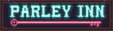
The name in hand-set neon over one long key. Peers are enrolled by key and a principal trusts another principal by key, so the key is the one symbol that holds everywhere in the model. In text the name is always ParleyInn, one word; only the sign sets PARLEY and INN apart.
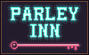
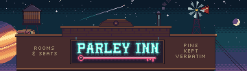
Pins kept verbatim.
Colours
- Night#0B1A29
- Bone#EAD9B5
- Dusk coral#CC6E57
- Mesa plum#5A2E48
- Teal#2F8C8A
- Amber#FFC857
- Neon cyan#63F3E4
- Neon pink#FF5C8A
All 48, in 7 ramps, and nothing else
Neon cyan is the house’s own light: the name on the sign and the beams of the pen.
Neon pink is the working light: the key under the name, power cells, the ledgers’ bookmarks and boundary plates.
Amber is lamplight and the proprietor’s business: the Needs you sign and the rail its tickets hang on.
Red is for marks that must not be missed: UNTRUSTED, QUARANTINE, the seals and the band on every envelope.
The page is drawn in the same colours: night for the ground, bone for text, steel for quiet text, and the sign’s cyan, pink and amber for accents.
The cast
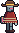
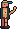
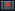
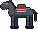
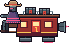
Hands are steel robots in poncho and hat. The house’s own staff are brass. The proprietor, the principal, keeps the house: a person or a service account. Figures from outside the house are dark iron: the outfit’s horses, the stage’s driver and the smith next door.
Type
Pins kept verbatimJersey 15, for headings. The sign’s own eight letters are drawn by hand, 15 pixels tall.
A2·4812–4830 · Needs you · RecallTiny5, for names, numbers and captions
Every pin that restores is stored verbatim and restored verbatim after every compaction.Chakra Petch, for everything read at length
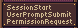
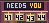
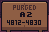
Lettering inside the picture is set from pixel fonts on their own grid: Micro 5, Silkscreen, Tiny5 and Jersey 10.
How it talks
- Pins that restore come back verbatim after every compaction.
- Recalled content reaches an agent only when it asks, inside an envelope.
- Quarantined content stays in the record and off every path to an agent.
The inn is the picture, never the vocabulary: copy names the domain model’s concepts, and the frontier only lends them a place.
Files
- tokens.jsonThe colours, ramps, type and shape as data
- tokens.cssThe same as CSS custom properties, with the fonts
- palette.pngThe 48 colours as an image a pixel editor loads
- banner-2x.pngThe README banner at twice its size
- social.pngThe picture for link previews, 1200 by 630
- docs/designEvery image, font and licence, and the art source